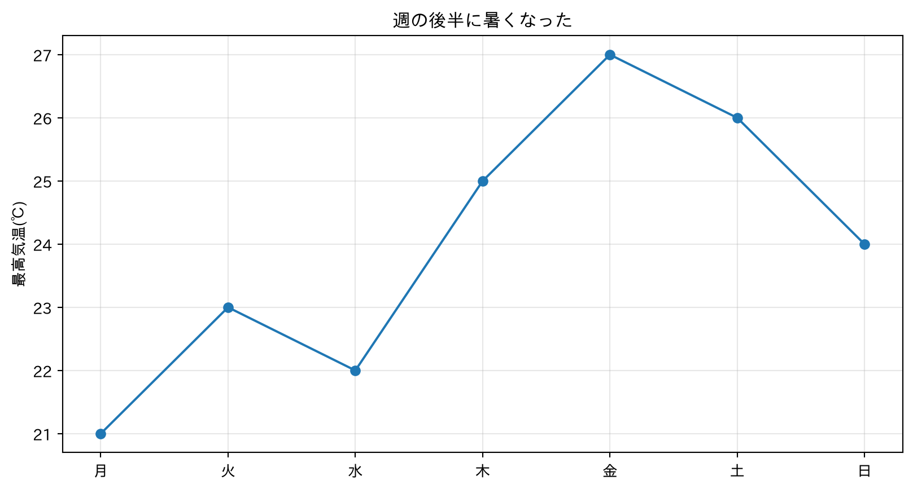
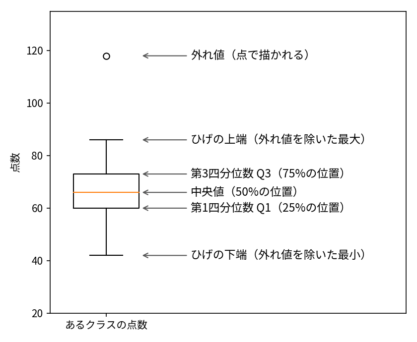
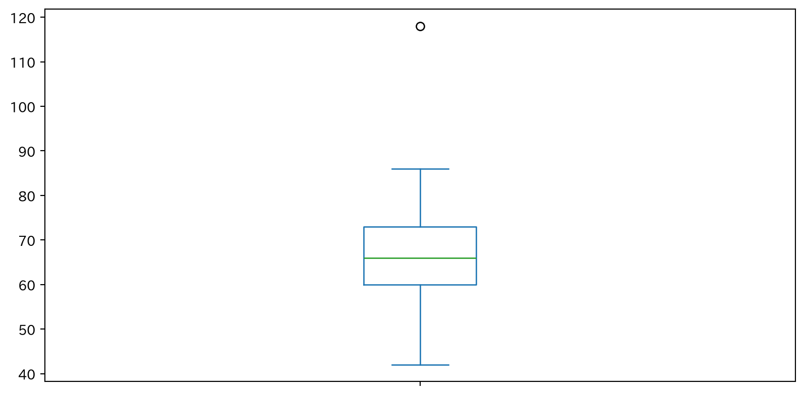
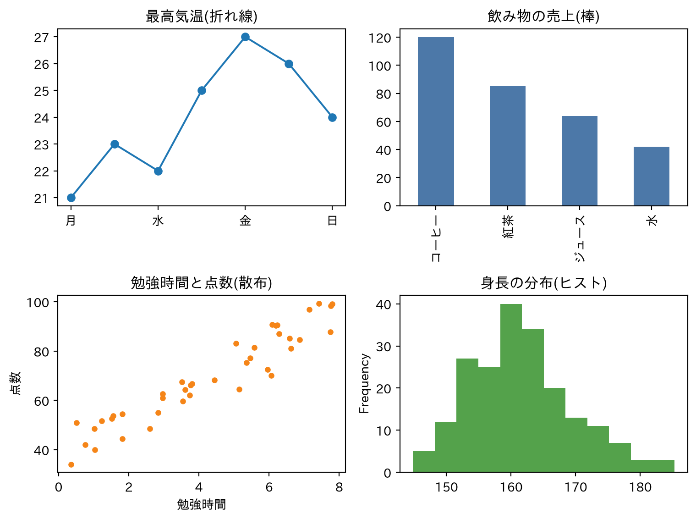

初めての人向け・90分×8コマ
Invalid Date
| 知りたいこと | 合うグラフ |
|---|---|
| 時間とともにどう変わったか | 折れ線グラフ |
| 量を比べたい（名義・順序） | 棒グラフ |
| 2つの量に関係があるか | 散布図 |
| ばらつき・偏りを見たい | ヒストグラム |
| 複数のグループの分布を比べたい | 箱ひげ図 |
| 全体の中の割合 | 円グラフ／100%積み上げ棒（注意あり） |
第3コマの尺度とセットで考えます。「格好いいから」ではなく「質問に答える形」を選ぶのが原則です。
| グラフ | 何の、どんな様子を見せたいときに使うか |
|---|---|
| 棒グラフ | カテゴリごとの量の大きさ。「どのカテゴリが、どれくらい大きいか」の様子 |
| ヒストグラム | 1つの量の分布の形。「どこに集まり、どう偏り、山はいくつか、飛び抜けた値はないか」の様子 |
| 箱ひげ図 | 複数のグループの分布の要約。「中心はどこか、広がりはどうか、外れ値はあるか」をグループごとに比べる様子 |
| 折れ線グラフ | 時間とともに量がどう変化したか。「増えた・減った・横ばいか、ピークはいつか」の様子 |
| 散布図 | 2つの量の関係。「一方が大きいとき、もう一方も大きいか（右上がり／右下がり／無関係）、点はどう集まり、外れ値はないか」の様子 |
描く前に「何の、どんな様子を見せたいのか」を一言で言えることが、グラフ選びの出発点です。
表（DataFrame）の .plot に種類（line、bar、scatter など）を指定するだけです。仕上げは matplotlib が担います。
ノート
円グラフは角度が読みにくいので注意が必要です。3Dグラフは、奥行きで値が読みにくいのでこの講座では扱いません。
箱ひげ図の中身は「四分位数」です。データ全体の真ん中50%が箱に入ります。
describe() の 25%・50%・75%（第4コマ）に出ていた、あの行がそのまま箱の上下と中央の線になります
箱ひげ図の解剖図
one_class = pd.Series([42, 48, 52, 55, 57, 58, 60, 61, 62, 63, 64, 65, 66,
67, 68, 69, 70, 71, 73, 75, 77, 79, 82, 86, 118])
q1 = one_class.quantile(0.25)
med = one_class.median()
q3 = one_class.quantile(0.75)
iqr = q3 - q1
print(f"Q1={q1}, 中央値={med}, Q3={q3}, IQR={iqr}")
lo, hi = q1 - 1.5 * iqr, q3 + 1.5 * iqr
print("外れ値の候補:", one_class[(one_class < lo) | (one_class > hi)].tolist())
plt.figure()
one_class.plot.box()
plt.show()Q1=60.0, 中央値=66.0, Q3=73.0, IQR=13.0
外れ値の候補: [118]
fig, axes = plt.subplots(2, 2, figsize=(8, 6))
temp.plot.line(ax=axes[0, 0], marker="o", title="最高気温(折れ線)")
sales.plot.bar(ax=axes[0, 1], color="#4C78A8", title="飲み物の売上(棒)")
study.plot.scatter(ax=axes[1, 0], x="勉強時間", y="点数", s=14,
color="#F58518", title="勉強時間と点数(散布)")
heights.plot.hist(ax=axes[1, 1], bins=12, color="#54A24B",
title="身長の分布(ヒスト)")
plt.tight_layout()
plt.show()